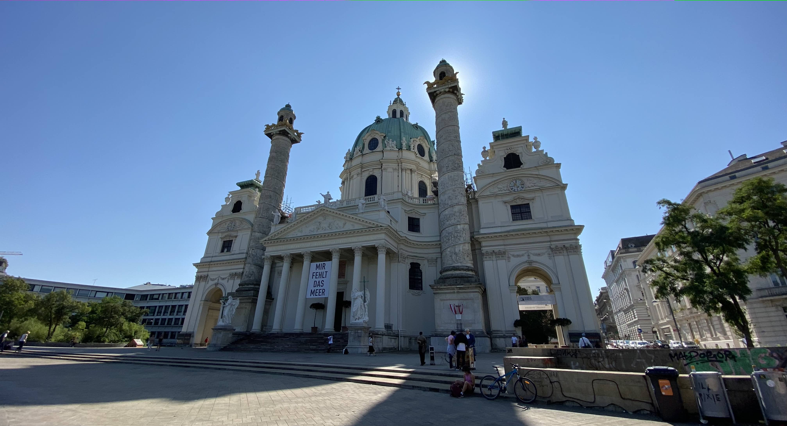

Vídeň září 2021

Už dlouho jsme se s Marťou a Aničkou bavili o tom, že bychom mohli podniknout nějakou společnou dovolenou. Když jsme ale začali chrlit megalomanské nápady na cesty kolem světa, uvědomili jsme si, že bychom nejdříve mohli vyzkoušet něco menšího, při čemž zjistíme, zda nás to spolu baví a zda se na takovém “double date” vzájemně nepozabíjíme.
A tak jsme vymysleli jednodenní výlet do Vídně. Nejdříve jsme ho měli naplánovaný na polovinu května. Ale v daném termínu mělo být špatné počasí, takže jsme nakonec náš premiérový trip přesunuli na začátek září.
Osobně jsem nechtěl nechat nic náhodě, takže jsem koupil jízdenky, připravil program a koupil průvodce. Ani holky nezůstaly nepřipravené. Anička vytipovala několik podniků, kam bychom mohli zajít na oběd, nebo na kávu. A Marťa koupila pro všechny členy svého tandemu cestovní pojištění. Není se co divit - přece jen Vídeň není Hrádek.
DEN 0
V 7:24 jsme vyjeli tramvají z Tábora na hlavní nádraží, odkud nám v 7:48 odjížděl žlutý vlak do Vídně. V něm jsme se marně snažili objednat občerstvení.
Vlak jel na čas. Takže v 9:20 jsme přijeli na hlavní vídeňské nádraží, zašli na záchod a vyrazili jsme do víru velkoměsta. Nejdřív jsme si dali kávu a zákusek (já pouze horkou čokoládu) v kavárně Café Goldegg. Poté jsme se podívali na palác Belveder, prošli si jeho zahrady a pokračovali na náměstí Karlsplatz. Tam nám skvěle vyšlo světlo, takže se Klárounovi a Aničce podařilo vyfotit nádherné fotky kostela. Pokračovali jsme kolem Staatsoper a Albertiny až ke Stephansdomu, kde jsme se rozhodli zajít na oběd. V jedné z klidných bočních uliček jsme narazili na malebnou hospůdku Weibel’s Wirtshaus, kde jsem si dal na jídlo vídeňský telecí řízek s bramborovo-okurkovým salátem a pivem. Nebudu nikomu nic nalhávat, to pivo nebyl dobrý nápad, takže přišel útlum. O to horší bylo, že po obědě jsme se rozhodli jít na vyhlídku na Stephansdom, kde na nás čekalo 343 strmých schodů. Myslím, že pohled na Vídeň ale za tu námahu stál. Ze Stephansplatzu jsme pokračovali k Hofburgu. Na náměstíčku před touto ikonickou stavbou Vídně jsme chvíli pozorovali koňské povozy. Na jednom z nich jsme dokonce viděli, jak se veze vipet. Po opuštění bývalého císařského objektu jsme dorazili na MuseumsQuartier, kde naše plánovaná prohlídka města končila. Protože jsme byli dost unavení zašli jsme na kávu a zákusek do Café Ulrich. Holky se potom chtěly jít podívat na Mariahilfer strasse. Při cestě z kavárny jsem se ale ztratil, takže jsme si trošku zašli. Nakonec jsme ale hlavní nákupní tah našli a po něm se vraceli k budovám muzejí se sochou Marie Terezie sedící mezi nimi. Odtud jsme to vzali přes zahrady Hofburgu k Albertině a spěchali na nádraží. Tam jsme měli čas tak akorát na to, abychom si koupili večeři do vlaku (krocan se šunkou a vajíčkem) a zašli si na záchod.
V 18:39 jsme vyjeli vlakem do Brna. Domů jsme dorazili kolem 20:30.
Sečteno podtrženo, myslím si, že trip se moc vydařil. A pokud bude od ostatních členů zájezdu zájem, dalším levelem by mohl být prodloužený víkend v některém z jiných evropských měst, nebo cyklovýlet podél Dunaje.